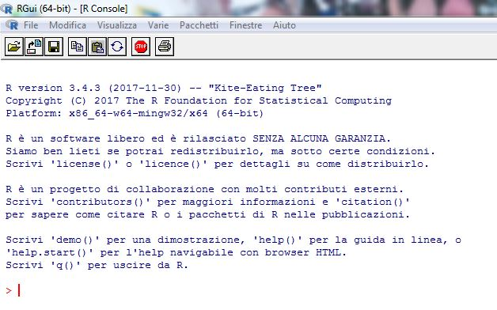
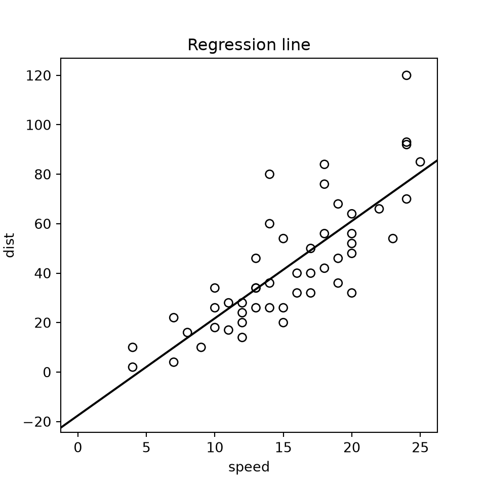

x <- 4
y <- c(2, 7, 4, 1)
x[1] 4y[1] 2 7 4 1with Python and SAS equivalents
Every example comes in three tabs: R, Python and SAS. Pick a language once and the choice is kept across every page of the site.
data/ folder of the repository.R is an open-source statistical computing environment released under the GNU-GPL licence. It is built on an object-oriented programming language and is by now well known well beyond specialist circles. It was created in 1996 by Ross Ihaka and Robert Gentleman at the University of Auckland as an offshoot of the S statistical language; indeed, at first most routines ran on either platform without any changes to the code. It is no coincidence that John M. Chambers, one of the creators of S, has been among the most active programmers supporting R.
More recent versions of R, however, have moved further away from S, emphasising the distinctive features of a language whose main strength is that it is entirely free. This is the real key to the success of R, which today offers a vast and ever-growing library of statistical routines, continually contributed by occasional programmers, experts and ordinary users alike: more than 10,000 packages at the beginning of 2018. It is therefore no surprise that on 7 January 2009 the prestigious New York Times ran an article devoted to R and its growing popularity among statisticians.
For these reasons, this book pays specific attention to R, with reference to release 3.4.3 (64-bit Microsoft Windows version), the latest at the time of writing. The commands used, however, also work with other versions of the software without any significant changes.
Files, data, additional materials, updates and errata for the book are available at http://www.unipa.it/persone/docenti/v/erasmo.vassallo/testo18a.
To begin with, Figure 1.1 shows the R start-up window with the cursor at the command line. Note that there are additional programs (almost always free or open source) that make the software easier to use through a minimal graphical interface and/or help with managing packages and the online help files; RStudio is one of the most popular. In any case, we keep to the command line, in keeping with the original philosophy of R and because it allows much greater flexibility with highly customisable scripts and commands.

DATA steps (data management) and PROC procedures (analysis). The SAS Studio web interface is included in SAS OnDemand for Academics.In this book we will not dwell on a general introduction to R or on the generic use of its basic commands, unless they are useful for, or directly serve, the specific topics covered. The software is in fact familiar to the typical reader of this book, since many degree programmes in statistics, and certainly the Statistics programme at the University of Palermo, offer dedicated computer-literacy courses. Nevertheless, readers with less experience will still be able to follow the book by making use of the many excellent guides available online in several languages; in English, good starting points are An Introduction to R, the official manual, and the Italian-language guides by V. Muggeo and G. Ferrara (Nozioni di R) and by A.M. Mineo (Dispensa di R).
Here, as a starting point for whatever further study readers find necessary, we present a few simple commands that illustrate how R works.
Starting with value assignment, the command x <- 4 assigns the value 4 to \(x\). Remember that R is case-sensitive, that is, \(x\) is different from \(X\). In the same way, y <- c(2,7,4,1) assigns the values (2, 7, 4, 1) to the vector \(y\).
While ls() lists the contents of the workspace, rm(PIL) removes the variable PIL from memory, provided of course that an object with that name already exists. To remove every variable whose name contains PIL, we would write rm(list=ls(pat="PIL")). Likewise, save(list=ls(), file="save.rda") saves the whole workspace to a file called save.rda. To delete all the data and variables in memory, clearing the entire workspace, we would write rm(list=ls()).
Once saved, for instance in prova.rda, the data can be loaded into a new R session simply with load("prova.rda"). After a series of computations, we may want to save only the objects \(V1\) and \(V2\), with save(V1, V2, file="save2.rda"). To store a complete snapshot of memory, including data and variables, we can use save.image().
ls() # workspace contents
rm(PIL) # remove the object PIL
rm(list = ls(pat = "PIL")) # remove objects whose name contains "PIL"
save(list = ls(), file = "save.rda") # save the whole workspace
rm(list = ls()) # clear the workspace
load("prova.rda") # reload saved objects
save(V1, V2, file = "save2.rda") # selective save
save.image() # full snapshot (.RData file)import pickle
[n for n in dir() if not n.startswith("_")] # defined objects (in Jupyter: %who)
del PIL # remove the object PIL
# remove objects whose name contains "PIL"
for n in [n for n in list(globals()) if "PIL" in n]:
del globals()[n]
# selective save and load with pickle
with open("save2.pkl", "wb") as f:
pickle.dump({"V1": V1, "V2": V2}, f)
with open("save2.pkl", "rb") as f:
objects = pickle.load(f)
# Python has no real "save.image()": to save a whole session
# you can use the dill library (dill.dump_session("session.pkl"))./* Matrix objects in PROC IML */
proc iml;
show names; /* list matrices in memory (≈ ls()) */
free PIL; /* remove the matrix PIL (≈ rm(PIL)) */
store V1 V2; /* selective save (≈ save(V1, V2, ...)) */
store _all_; /* save all matrices (≈ save.image()) */
free _all_; /* clear memory (≈ rm(list = ls())) */
load _all_; /* reload saved matrices (≈ load()) */
quit;
/* Datasets in the temporary WORK library */
proc datasets library=work;
delete PIL; /* delete the dataset PIL */
delete PIL:; /* delete datasets whose name STARTS with PIL */
quit;In SAS the working “memory” is the temporary WORK library, which is emptied at the end of the session; to keep data you use a permanent library (libname mylib "path";).
Let us continue with more examples in R. Readers can type in the commands and check how they behave.
The result is not what we expected, because \(Y\) does not exist. Indeed, \(y\) and \(Y\) are not the same object. As mentioned, R is case-sensitive; users familiar with programming languages or Unix systems will not be surprised. Python is case-sensitive too, whereas SAS is not: in SAS, y and Y refer to the same object.
The correct product, a scalar times a vector, gives a vector. Conversely, \(y\) times its transpose gives a scalar. Note the matrix product operator %*% and the transpose function t(). Whereas a row vector times a column vector gives a scalar, a column vector times a row vector gives a matrix.
Matrices can also be built by filling. The command matrix(1:30,5,6) defines a matrix containing the values 1 to 30 in 5 rows and 6 columns. Similarly, to fill a \(2 \times 3\) matrix with zeros we would write matrix(0,2,3), while a \(3 \times 3\) unit diagonal matrix (the identity matrix) is diag(1,3,3).
[[ 1 6 11 16 21 26]
[ 2 7 12 17 22 27]
[ 3 8 13 18 23 28]
[ 4 9 14 19 24 29]
[ 5 10 15 20 25 30]][[0. 0. 0.]
[0. 0. 0.]][[1. 0. 0.]
[0. 1. 0.]
[0. 0. 1.]]R fills matrices by column, whereas numpy and the SAS/IML shape() function fill them by row. To obtain the same matrix you need order="F" in Python and a transpose in SAS.
One of the most interesting features of R is the ability to define new commands through functions. For example, sm <- function(a,b) a+b defines a function that adds the arguments \(a\) and \(b\); a function with more than one statement must be enclosed in curly braces. So sm(6,8) returns the sum 14.
Now let us build an object dati (data) as a data.frame(), entering the values directly at the command line, to fill a matrix with 5 rows and 2 columns, \(X1\) and \(X2\). The object \(X1\) does not exist unless it is called from within dati, either by the variable name or by the position of the column vector. Note that # lets you add comments, which the software ignores.
X1 X2
0 3 4
1 6 3
2 8 6
3 9 7
4 1 8NameError: name 'X1' is not definedThe last command displays all the values in the first column, whatever the row. To display all the values in the first row we would write dati[1,], while to display the single value in the second row and first column we would write dati[2,1].
If, however, we want to work directly with the values in dati without referring to the data frame that contains them every time, we can use attach(). The reverse operation is detach().
Furthermore, if matrix(1:6,2,3) is a matrix with 2 rows and 3 unnamed columns, and VX and VY hold the column and row labels respectively, the dimnames argument lets us set the row and column names. (The labels mean low, medium, high and short, long.)
Data are usually not typed in at the command line but read from external files. Two widely used commands are read.table and write.table, which read and write tabular data respectively. R can also read and write data in the formats of the best-known statistical packages, in most cases through dedicated packages. For instance, the file pil.csv (Italian GDP, used in later chapters) uses the semicolon as separator, following the Italian convention, and is read with read.csv2().
In SAS OnDemand for Academics, files must first be uploaded to your personal space and the path adjusted accordingly (e.g. "/home/u1234567/data/pil.csv").
For our purposes, let us work through a few examples of statistical computation. Given a set of data \(X\), we compute the absolute and relative frequencies. The syntax needs no explanation.
X
1 1
2 1
3 4
4 1
5 1
6 3
7 1
8 2
9 2
Name: count, dtype: int64X
1 0.0625
2 0.0625
3 0.2500
4 0.0625
5 0.0625
6 0.1875
7 0.0625
8 0.1250
9 0.1250
Name: proportion, dtype: float64To display a histogram of the data in \(X\), the command hist(X) produces the chart shown in Figure 1.2. R allows extensive customisation of its graphics. Readers can try standard commands such as plot(), boxplot() or pie(), to name just a few.
Each package chooses histogram classes in its own way: R closes them on the right, (a, b], whereas matplotlib and SAS close them on the left. With discrete data like these, bar heights may therefore differ slightly.
A general description of the dataset \(X\) is given by summary(), a very useful command for summarising and displaying the main results of any statistical analysis. In our example, it reports some descriptive statistics.
By default R and pandas compute quartiles with the same method (linear interpolation, type 7 in R): \(Q_3 = 7.25\). SAS uses a different default definition (QNTLDEF=5) and returns \(Q_3 = 7.5\), the same value R gives with quantile(X, type = 2). This is not an error: there are several definitions of the sample quantile.
To show how useful summary() is, we will apply it to a regression model. For this purpose, we load the cars data from the datasets package, which ships with R. The command for estimating a linear regression is lm(); the tilde ~ separates the dependent variable from the explanatory ones.
Call:
lm(formula = dist ~ speed, data = cars)
Residuals:
Min 1Q Median 3Q Max
-29.069 -9.525 -2.272 9.215 43.201
Coefficients:
Estimate Std. Error t value Pr(>|t|)
(Intercept) -17.5791 6.7584 -2.601 0.0123 *
speed 3.9324 0.4155 9.464 1.49e-12 ***
---
Signif. codes: 0 '***' 0.001 '**' 0.01 '*' 0.05 '.' 0.1 ' ' 1
Residual standard error: 15.38 on 48 degrees of freedom
Multiple R-squared: 0.6511, Adjusted R-squared: 0.6438
F-statistic: 89.57 on 1 and 48 DF, p-value: 1.49e-12 OLS Regression Results
==============================================================================
Dep. Variable: dist R-squared: 0.651
Model: OLS Adj. R-squared: 0.644
Method: Least Squares F-statistic: 89.57
Date: sab, 31 ott 2026 Prob (F-statistic): 1.49e-12
Time: 19:13:39 Log-Likelihood: -206.58
No. Observations: 50 AIC: 417.2
Df Residuals: 48 BIC: 421.0
Df Model: 1
Covariance Type: nonrobust
==============================================================================
coef std err t P>|t| [0.025 0.975]
------------------------------------------------------------------------------
Intercept -17.5791 6.758 -2.601 0.012 -31.168 -3.990
speed 3.9324 0.416 9.464 0.000 3.097 4.768
==============================================================================
Omnibus: 8.975 Durbin-Watson: 1.676
Prob(Omnibus): 0.011 Jarque-Bera (JB): 8.189
Skew: 0.885 Prob(JB): 0.0167
Kurtosis: 3.893 Cond. No. 50.7
==============================================================================
Notes:
[1] Standard Errors assume that the covariance matrix of the errors is correctly specified.In this way, R displays the estimates and a first set of diagnostics on the goodness of fit of the linear model between dist (the distance needed to stop the car) and speed (the speed of the same car); we will return later to the statistics produced by lm().
Finally, the commands plot(cars, main="Regression line") and abline(modello) draw the scatter plot of dist against speed and add the regression line estimated by OLS (Figure 1.3); note that abline() requires the graphics device to be already open.

It is not our aim here to describe further features and functions of R; rather, this first chapter provides a general, admittedly incomplete overview that is nonetheless sufficient for the purposes of the book.